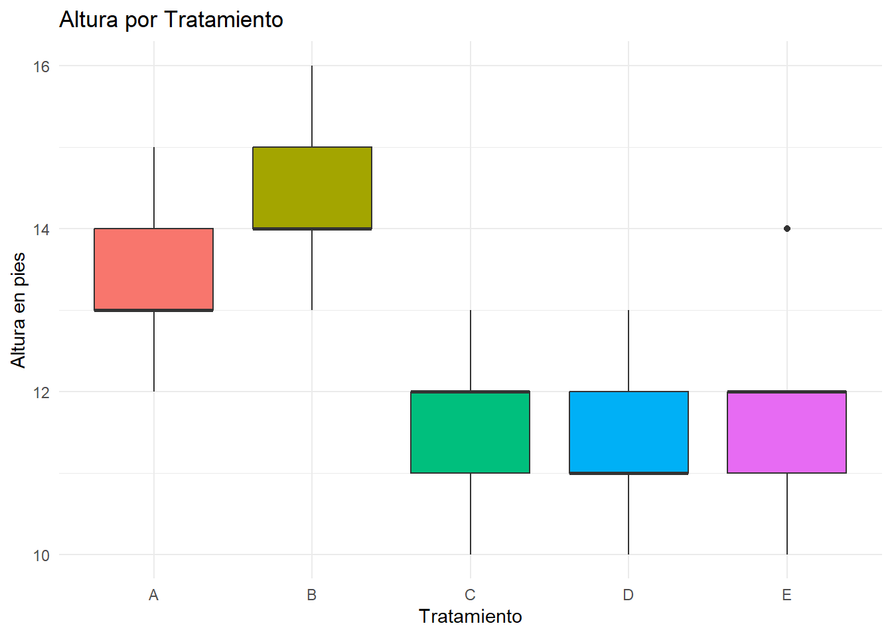

# Instalación del paquete ggplot2
install.packages("ggplot2")8 Paquetes en R
Los paquetes en R constituyen una de las herramientas más potentes del lenguaje, ya que permiten ampliar sus funcionalidades básicas y abordar tareas especializadas de manera eficiente. Gracias a los paquetes, es posible acceder a funciones, datos y documentación desarrollados por expertos, lo que facilita la realización de análisis estadísticos, manipulación de datos y visualización avanzada, entre otras aplicaciones (R Core Team, 2023).
8.1 ¿Qué es un paquete en R?
Un paquete en R se define como una colección estructurada de funciones, conjuntos de datos y documentación que extiende las capacidades del entorno base. Estos paquetes, desarrollados tanto por la comunidad como por equipos especializados, están orientados a resolver problemas concretos en diversas áreas, desde la manipulación de datos hasta el análisis estadístico avanzado o la generación de gráficos complejos (Wickham & Bryan, 2023).
8.1.1 Características principales de los paquetes
Las características más relevantes de los paquetes en R se resumen a continuación:
Funciones especializadas: Cada paquete incluye funciones diseñadas para tareas específicas, como crear gráficos, realizar análisis estadísticos o manipular datos.
Documentación: Los paquetes incluyen documentación detallada que explica cómo utilizarlos, con ejemplos prácticos.
Datos de ejemplo: Muchos paquetes incluyen conjuntos de datos que permiten practicar y entender su funcionalidad.
8.1.2 Importancia del uso de paquetes en R
El uso de paquetes resulta fundamental para aprovechar plenamente el potencial de R, ya que ofrecen extensibilidad, eficiencia y especialización. Los paquetes permiten realizar tareas que no están disponibles en el entorno base, simplifican procesos complejos y proporcionan soluciones adaptadas a áreas específicas, como la agronomía, la biología o la economía. Además, la comunidad activa de R garantiza la actualización y el soporte continuo de una amplia variedad de paquetes, lo que contribuye a mantener el lenguaje a la vanguardia en el análisis de datos (Wickham & Grolemund, 2017).
8.2 Instalación y carga de paquetes
La gestión de paquetes en R es un proceso fundamental para acceder a herramientas especializadas y ampliar las capacidades del entorno base. La mayoría de los paquetes se obtienen desde CRAN (Comprehensive R Archive Network), el repositorio oficial que alberga una amplia variedad de recursos para diferentes áreas de aplicación (R Core Team, 2023).
8.2.1 Proceso de instalación
Para instalar un paquete desde CRAN, se utiliza la función install.packages(). Por ejemplo, para instalar el paquete ggplot2, ampliamente utilizado para la visualización de datos, se emplea la siguiente instrucción:
La instalación de un paquete es un proceso que solo debe realizarse una vez en el sistema.
8.2.2 Carga de paquetes
Después de instalar un paquete, es necesario cargarlo en cada nueva sesión de trabajo para poder utilizar sus funciones. Esto se realiza mediante la función library():
# Cargar el paquete ggplot2
library(ggplot2)La carga de paquetes debe repetirse cada vez que se inicia una nueva sesión en R, ya que los paquetes no se cargan automáticamente al abrir el entorno.
8.2.3 Automatización de la instalación y carga
Para asegurar que un paquete esté disponible y evitar errores al compartir scripts, es recomendable automatizar el proceso de verificación, instalación y carga. La siguiente estructura permite comprobar si el paquete está instalado y, en caso contrario, instalarlo y cargarlo automáticamente:
# Verificar e instalar automáticamente un paquete
if (!require("ggplot2")) install.packages("ggplot2")Este enfoque contribuye a la reproducibilidad del código y facilita el intercambio de scripts entre usuarios, garantizando que todas las dependencias necesarias estén disponibles en el entorno de trabajo (R Core Team, 2023).
8.3 Paquetes recomendados para tareas específicas
En el ámbito del análisis estadístico y la manipulación de datos, existen diversos paquetes que facilitan tareas específicas y permiten realizar análisis complejos de manera eficiente. A continuación, se presenta una clasificación de los paquetes más relevantes según su área de aplicación:
| Área | Paquete | Descripción |
|---|---|---|
| Manipulación de datos | dplyr |
Facilita la transformación y manipulación de datos mediante funciones intuitivas |
tidyr |
Permite reorganizar datos entre formatos ancho y largo | |
data.table |
Optimizado para el manejo de grandes conjuntos de datos | |
| Análisis exploratorio | DataExplorer |
Automatiza el análisis exploratorio de datos |
summarytools |
Genera resúmenes estadísticos detallados | |
psych |
Proporciona funciones para análisis psicométricos y estadística descriptiva | |
| Análisis estadístico | stats |
Incluye funciones base para pruebas estadísticas comunes |
agricolae |
Especializado en diseños experimentales y análisis agrícolas | |
AgroR |
Proporciona funciones y herramientas para análisis estadísticos en agronomía | |
car |
Facilita análisis de regresión avanzados | |
| Visualización | ggplot2 |
Permite crear gráficos personalizados de alta calidad |
plotly |
Genera gráficos interactivos |
8.3.1 Instalación y carga de paquetes esenciales
El siguiente código muestra cómo instalar y cargar un conjunto básico de paquetes para análisis estadísticos:
# Paquetes para manipulación y visualización de datos
if (!require("tidyverse")) install.packages("tidyverse")
if (!require("data.table")) install.packages("data.table")
# Paquetes para análisis exploratorio
if (!require("DataExplorer")) install.packages("DataExplorer")
if (!require("psych")) install.packages("psych")
# Paquetes para análisis estadísticos especializados
if (!require("agricolae")) install.packages("agricolae")
if (!require("AgroR")) install.packages("AgroR")
if (!require("car")) install.packages("car")
# Paquetes para manejo de archivos
if (!require("readxl")) install.packages("readxl")
if (!require("writexl")) install.packages("writexl")Estos paquetes proporcionan un conjunto robusto de herramientas para realizar análisis estadísticos completos, desde la exploración inicial de datos hasta análisis especializados en áreas específicas como la agronomía o la psicometría (R Core Team, 2023).
8.4 Ejemplo práctico: Integración de paquetes en un análisis estadístico
Este ejemplo ilustra la aplicación práctica de diversos paquetes de R en un análisis estadístico, basado en el estudio presentado por López y González (2016) sobre el crecimiento de plántulas de pino maximinoii. El código completo está disponible en: https://github.com/Ludwing-MJ/Paquetes_Ej.
8.4.1 Contexto del estudio
Se evaluó el efecto de cinco tratamientos de preparación del terreno sobre el crecimiento en altura de plántulas de pino maximinoii. El experimento incluyó 25 parcelas, con cinco repeticiones por tratamiento, asignadas aleatoriamente. Las mediciones de altura se realizaron después de cinco años de crecimiento.
8.4.2 Implementación del análisis
# Instalación y carga de paquetes necesarios
packages <- c("tidyverse", "agricolae", "readxl", "writexl", "rstudioapi")
for(pkg in packages) {
if (!require(pkg, character.only = TRUE)) {
install.packages(pkg)
library(pkg, character.only = TRUE)
}
}
# Carga de datos
altura_pino <- read_excel("datos_arboles.xlsx")
# Análisis de varianza y comparaciones múltiples
modelo_anova <- aov(altura_ft ~ tratamiento, data = altura_pino)
summary (modelo_anova) Df Sum Sq Mean Sq F value Pr(>F)
tratamiento 4 34.64 8.66 5.851 0.00276 **
Residuals 20 29.60 1.48
---
Signif. codes: 0 '***' 0.001 '**' 0.01 '*' 0.05 '.' 0.1 ' ' 1comparacion_tukey <- HSD.test(modelo_anova, "tratamiento")
comparacion_tukey$groups altura_ft groups
B 14.4 a
A 13.4 ab
E 11.8 b
C 11.6 b
D 11.4 b# Visualización de resultados
ggplot(altura_pino, aes(x = tratamiento, y = altura_ft, fill = tratamiento)) +
geom_boxplot() +
labs(title = "Altura por Tratamiento",
x = "Tratamiento",
y = "Altura en pies") +
theme_minimal() +
theme(legend.position = "none")
# Exportación de resultados
write_xlsx(comparacion_tukey$groups, "resultados_tukey.xlsx")
ggsave("ggplot_pino.png")Este ejemplo demuestra cómo los diferentes paquetes se integran en un flujo de trabajo coherente, desde la preparación de datos hasta la visualización y exportación de resultados. El uso de paquetes especializados como agricolae para el análisis estadístico, ggplot2 para la visualización y writexl para la exportación de resultados, simplifica significativamente el proceso de análisis y presentación de datos (López & González, 2016; R Core Team, 2023).
La estructura modular del código y el uso de paquetes especializados facilitan la reproducibilidad del análisis y permiten adaptarlo fácilmente a otros conjuntos de datos similares.